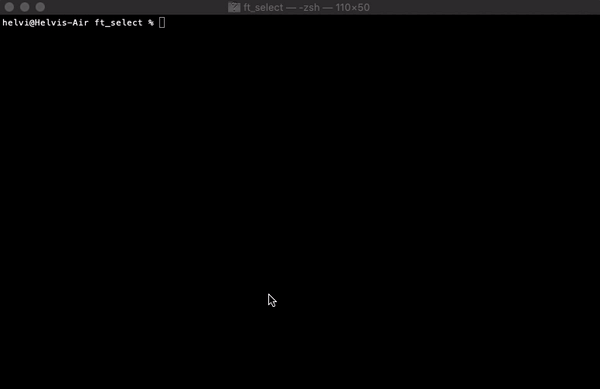
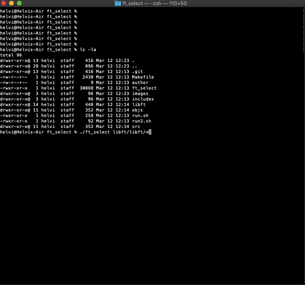
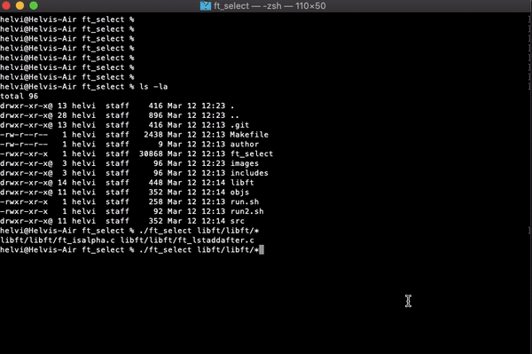

hlaineka@HiveHelsinki:~$ cd ft_select/
hlaineka@HiveHelsinki:~/ft_select$ cat ft_select.txt
ft_select is project where we were asked to create a simple program, that creates a list from the parameters that the user can go through with arrow keys, select items with space, delete items with backspace or delete and return the selected list to calling shell with enter. At any point the user can exit the program with esc and no selection is printed.
ft_select uses termcaps library for nice looking printing, handles system signals and can be called as a command substitution and in that case, works perfectly in subshell.
Below are a few gifs that describe the usage of ft_select.
User has to be able to run the command in subshell with backquotes (command substitution) as shown in the following example with rm command.

User has to be able to resize the window, also to a smaller size than what the list actually needs.

The program must handle all the signals and in every case it has to return in a controlled manner so that the usage of the calling shell is restored. Also ctrl z should work perfectly.

hlaineka@HiveHelsinki:~/ft_select$